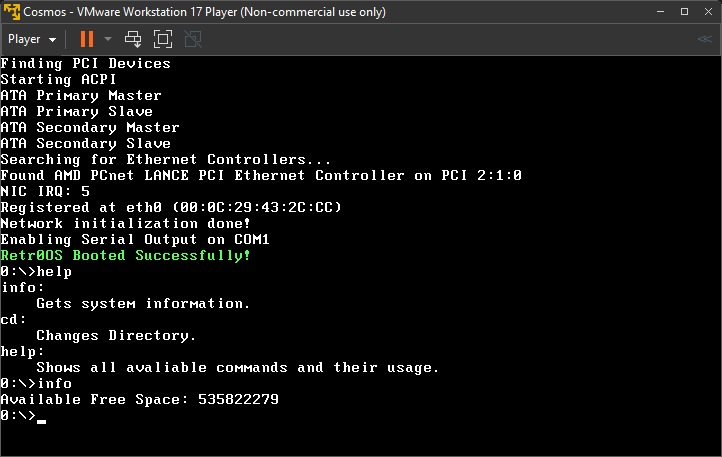

Hobby operating system, created by Alexander Buchkov.

About
Retr0OS is hobby operating system created by Retr0A (me). For now it has very basic functions and it is console-gui OS.
The OS is powered by CosmosOS, which is toolkit for developing operating systems with C#
Features
The system is not released and its in very early stage (v0.5), so don't expect to have many features
- File System Management
- Text Editor
- Basic Commands
Expected Features At Release
Here are the features that are expected when the Retr0OS 1.0 releases.
- Executable programs
- File System Management
- Build-in Programs like Text Editor
- Basic Commands
Download
| Type/Version | Download |
|---|---|
| Latest (PreRelease v0.5) | |
| File System (.vhd) | |
| Source |